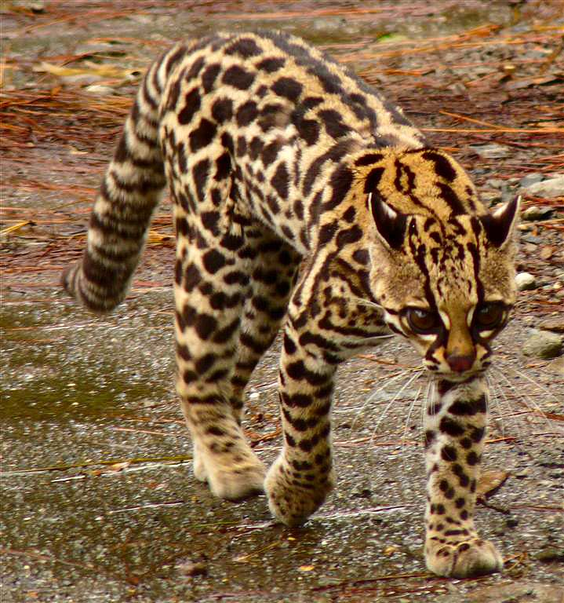
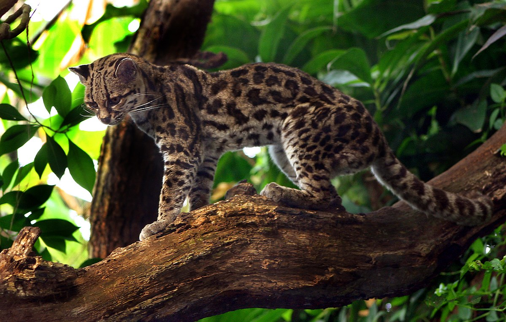
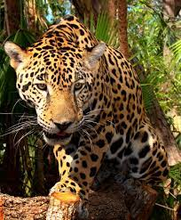

Felidae es una familia de mamiferos del orden Carnívora, comúnmente conocidos como gatos. El término "gato" se usa para referirse a los felinos en general, como al gato doméstico o felis catus.
Todos los felinos son carnívoros, y, en la mayoría de los casos, son predadores que acechan a sus presas demanera solitaria. Los felinos salvajes están presentes en África, Europa, Asia y América. Algunos están habituados a los hábitats boscosos, otros a ambientes áridos y algunos incluso a humedales y las montañas. Sus patrones de actividad varian desde los nocturnos hasta los crepusculares y los diurnos, dependiendo de las presas que prefieran
En Costa Rica hay seis especies de felinos silvestres:
| Nombre científico | Nombre común | Longitud de cabeza y cuerpo | Longitud de cola | Peso | Estado de conservación | Imagen |
|---|---|---|---|---|---|---|
| Leopardus pardalis | Manigordo, ocelote | 70 - 90 cm | 30 - 40 cm | 11 kg | LC (preocupación menor) | |
| Leopardus tigrinus | Caucel, tigrillo | 39 - 78 cm | 20 - 42 cm | 2 - 3 kg | VU (vulnerable) |  |
| Leopardus wiedii | Caucel, tigrillo | 40 - 60 cm | 3.5 kg | NT (casi amenazado) |  | |
| Pantera onca | Tigre, jaguar | 162 - 183 cm | 75 cm | 36 - 160 kg | NT (casi amenazado) |  |
| Puma concolor | Puma, león de montaña | 150 - 170 cm | 70 - 100 cm | 100 - 120 kg | LC (preocupación menor) | |
| Puma yagouaroundi | Yagouaroundi, león breñero | 50 - 70 cm | 30 - 60 cm | 3.5 - 9.1 kg | LC (preocupación menor) | |